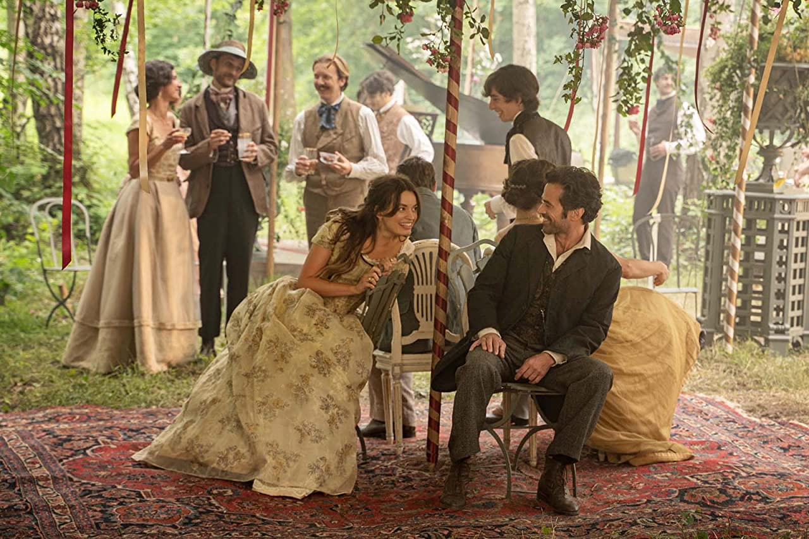
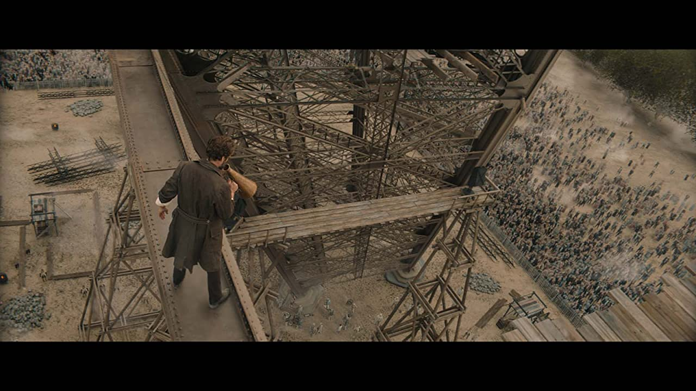

- Directed by Martin Bourboulon
- Starring
- Romain Duris
- Emma Mackey
Dear Reader, I enjoyed this one. It looks great, all sepias and faded colours reminiscent of the 1880s. [In other words, it looks old.]
 Party like it's 1889It commences in New York at the unveiling of the Statue of Liberty, a gift of the French to the people of the United States. Gustave Eiffel has built a steel frame inside the statue that ensures it will last for eternity. No wind or sea storm will move it. This impresses, not only the Americans, but the folks back home.
What to do next? The engineer is looking forward to the World Exposition in Paris in 1889 [a century since the end of the French Revolution]. Competitions are taking place in France to select a suitable world monument for this occasion. Eiffel and his architects opt for a tower, to enhance the city and attract tourists for years to come. Many of the officials want a concrete monolith, a la the Washington Monument. Eiffel and his team win the competition, but not before a lot of opposition is hurled at them. And it was only meant to stand for 20 years. However, the tower has other ideas, and the people love it, and the tourists love it, and the rest is history.
Then follows the travails of the construction. Lack of funds, lack of materials, lack of manpower. Several times, the powers that be, threaten to pull the plug, on the project, but Eiffel, somehow holds the project together, against all odds. One can see how Trade Unions came to be born.
 "Today's Wordle is 'Vivid'!!"However, the bulk of the film is taken up with Gustave’s love life. It is suggested that this section of the story is fictional, however, it appears there was an Adrienne in his life at one point. She returns to his life, after he becomes a widower, and they start a relationship, to the great chagrin of her husband. It is suggested that she was pregnant to Eiffel, when they were young, but lost the child in tragic circumstances.
Adrienne is played by Emma Mackey [from Sex Education]. It seems I can’t go to a cinema, at the moment, without seeing her up on the screen. I dropped into Kenneth Brannagh’s ‘Death on the Nile’ the other day and she was up there with the best of them. She is very good, [impeccable French - is it hers? Yes it is!] but I’m sure she should have looked older when their affair re-commenced. The film does shift a lot from the present to flashbacks of the couple, so it does get a little muddled at times.
A smile like that made Eiffel's knees go all wobbly.Romain Duris, as Eiffel, is splendid. He conveys all the emotions necessary to bring his dream to fruition. He even saves a workman and then Adrienne, his lover from drowning. So, you can see, he is very versatile. Against strong opposition he prevails. He has charisma, but also a strong will and determination, that see him through to his ultimate triumph.
As mentioned, it looks good, costuming is excellent, and the 19th Century Paris is well conveyed.Star Rating: 4/5 - Well worth visiting. - Well worth visiting.
[You see I’m not always Grumpy!]